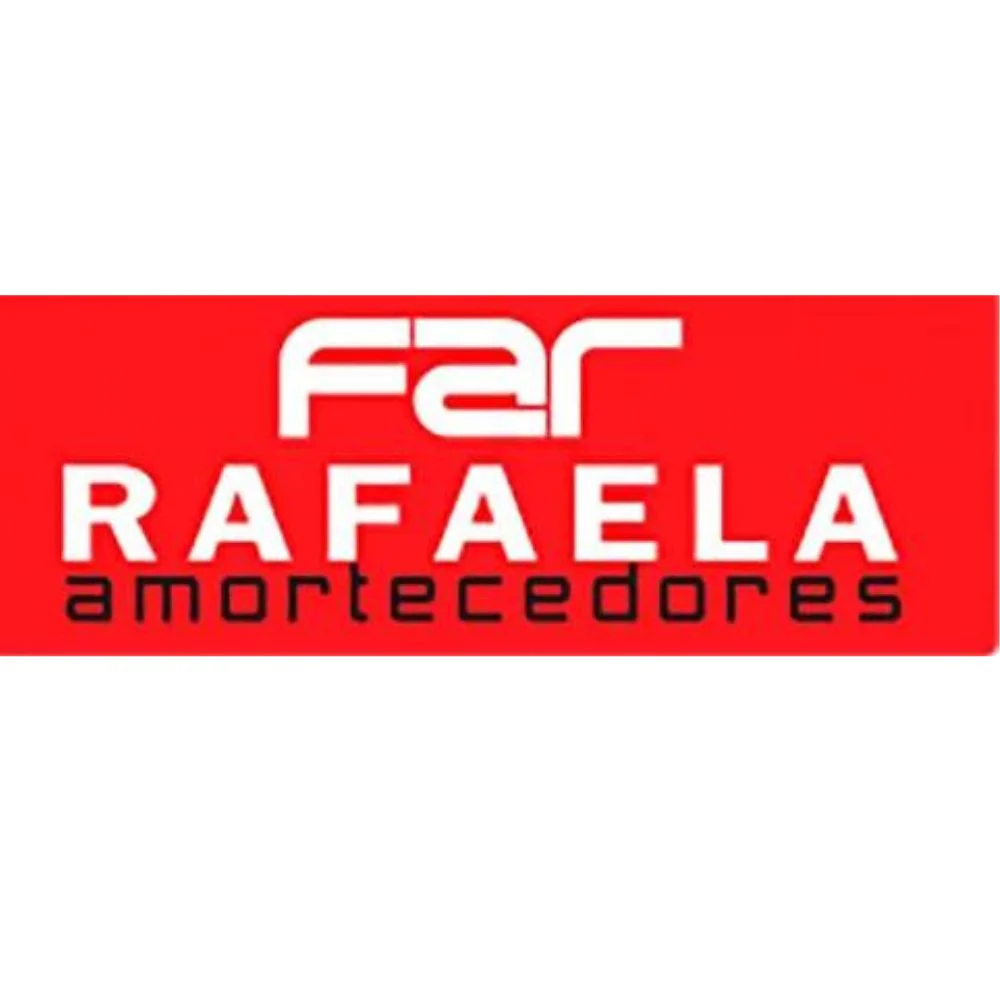
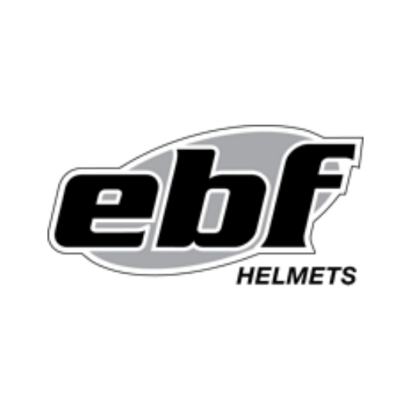
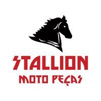
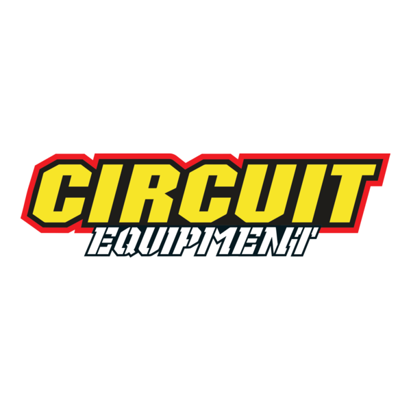
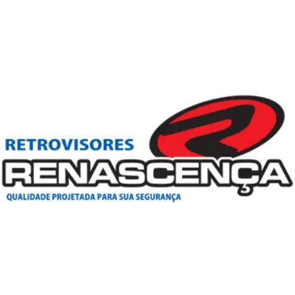
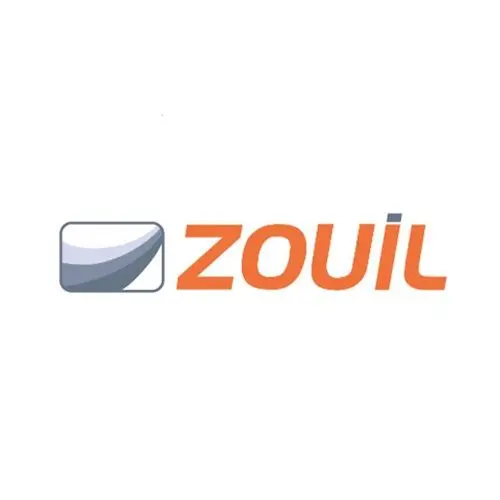

PORTFÓLIO DE MARCAS
Marcas líderes que confiam no nosso trabalho.
Representamos no Nordeste fabricantes consolidados em pneus, amortecedores, retentores, retrovisores e acessórios para o segmento de duas rodas.





